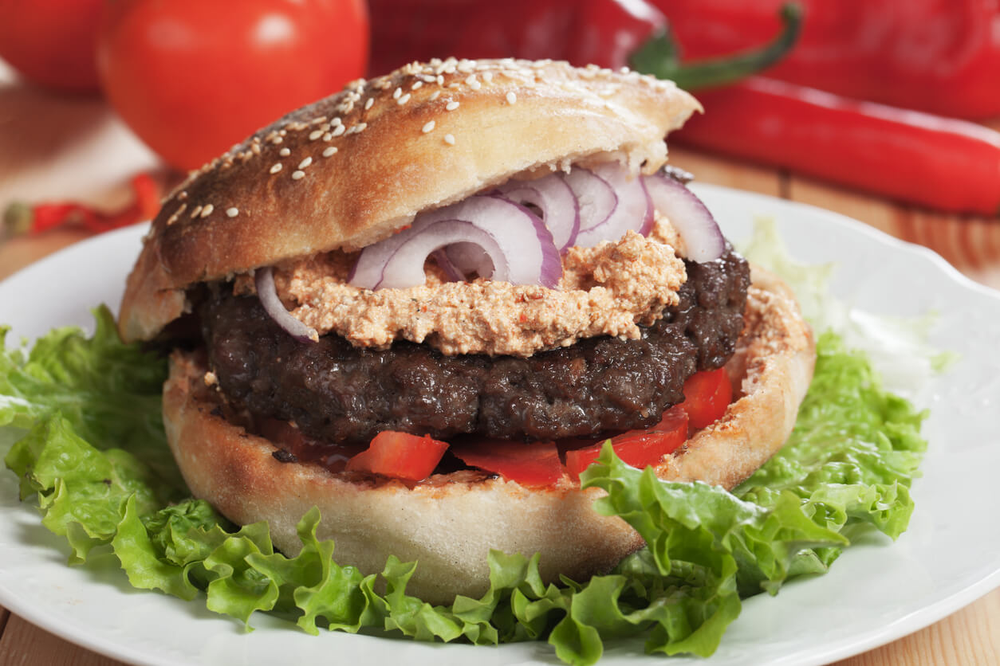

Serbian Burger

13 Oz juicy Serbian Burger Accompanied
with freshly Baked "Somun" Bread and served with the
selected condiments!
Ingredients:
- 220gr. Ground Beef
- 5gr. Salt
- 3gr. Black Pepper
- 50gr. Bacon
- 30gr. Cheese
- 30ml. Sunflower Oil
- Assorted Condiments
- Kajmak
- Ajvar
- Urnebes
- Iceberg Lettuce
- Onion
- Tomato
- Mayonnaise
- Mustard
Preparation Method
- Chop the onion and mix with the minced meat, bacon and cheese.
- Add salt and black pepper as needed and shape the burgers and grill.
- Enjoy!!!